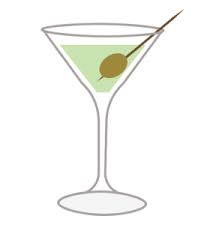
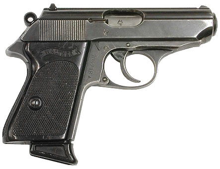

James Bond is a film series featuring a fictional story of a British secret agent on his
various missions and adventures around the world.
The first "official" Bond movie is Dr. No ( 1962), although
there were 2 "unofficial" Casino Royale spoofs and Never Say Never Again (1983) featuring the real Sean Connery,
the original James Bond actor. The official Casino Royale movie was released in 2006. The next Bond movie is slotted to be released in 2020, dubbed "Bond 25".
History: James Bond was originally a fiction series created by author Ian Fleming in the 1950s, inspired by several
World War 2 heros and friends of Fleming. James Bond has a code name of "007" and is world famous. His personal history is
lightly covered in the movie, but Bond is single, of Scottish decent, an Oxford Graduate, and is employed by the British Ministry of Intelligence: MI6.
All of the official films begin with a trademark scene showing the view down a gunbarrel with James Bond firing
back. Also, each movie begins with a psycadelic and provacative music video featuring a hit music clip such as Sam Smith's: The Writing on the Wall.

Favorite Drink : Vodka Martini- "Shaken, not Stirred" This cocktail highlights Bond's aggressive and hardcore persona.
This feature remains static throughout the Bond film series. I tried one once, YUK!
">
Weapon of Choice : Walther PPK- This weapon represents Bond's aggressive and cunning persona as a British secret agent.
It is a surprising choice due to it's poor accuracy and heavy recoil. The only advantage of the PPK is it's small size.
In later movies, Bond switches to a Walther P99, a more modern, practical sidearm.